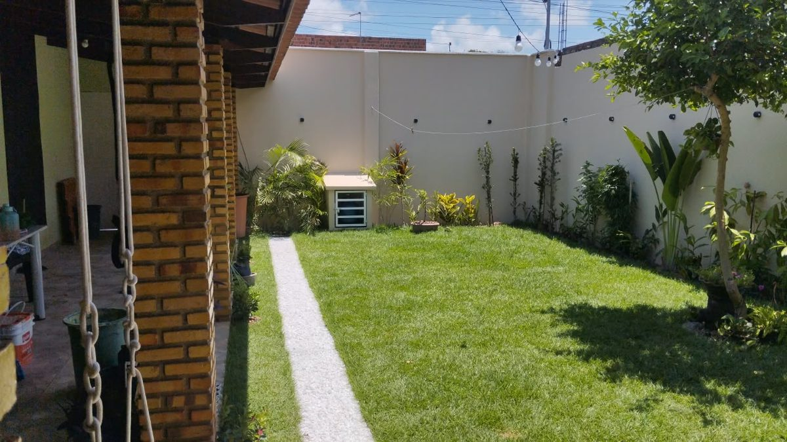

Bem-vindo ao Pardes
O Pardes é um lugar para reunir a família e os amigos: aniversários, encontros e comemorações, do jeito caseiro que deixa todo mundo à vontade.
A gente está terminando de preparar tudo com muito carinho. Tem área coberta para ficar protegido do sol e da chuva e um jardim gramado para a criançada correr.
-
Área coberta
Telhado de madeira e um clima aconchegante para receber os convidados.
-
Jardim gramado
Um quintal verde, com plantas e árvore, para curtir ao ar livre.
-
Iluminação decorativa
Lâmpadas e luzinhas que deixam a noite ainda mais bonita.
-
Arcos para decoração
Arcos dourados que ajudam na decoração e nas fotos da festa.
Para qual comemoração?
Se a sua festa não está na lista, chame a gente e conte o que você imagina.
- Aniversários
- Chás de bebê
- Confraternizações
- Encontros de família
- Batizados
- Festas de fim de ano
Como reservar é simples
-
1
Chame no WhatsApp
Conte a data e o tipo de festa que você tem em mente.
-
2
Venha conhecer
Combinamos uma visita para você ver o espaço de pertinho.
-
3
Reserve e aproveite
A gente acerta os detalhes juntos e você curte a festa com a família.
Um pouquinho do espaço
Mais fotos entram aqui assim que o espaço ficar pronto.

Perguntas frequentes
Quando o Pardes abre?
Ainda estamos finalizando o espaço. Chame no WhatsApp e avisamos quando houver uma data.
Posso visitar antes de fechar a data?
Pode, sim. Chame no WhatsApp e combinamos uma visita assim que o espaço estiver pronto.
Como faço para reservar uma data?
Pelo WhatsApp. Conte para a gente que tipo de festa você quer fazer e qual data tem em mente.
O espaço tem piscina?
Não. O Pardes é um espaço de festas sem piscina.
Quantas pessoas cabem no espaço?
Essa informação será divulgada em breve. Se precisar agora, pergunte pelo WhatsApp.
Quanto custa?
Os valores dependem da data e do tipo de festa. Chame no WhatsApp para pedir um orçamento.
Quer saber quando a gente abre?
Chame no WhatsApp e avisamos assim que as portas abrirem. Se preferir, é só tirar uma dúvida ou combinar uma visita.
Me avise quando abrir- Endereço
- Rua Igapó, 107 - Guarapes, Natal - RN, 59074-730
- @jardimpardes